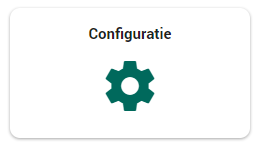
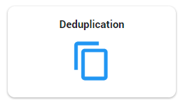
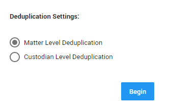
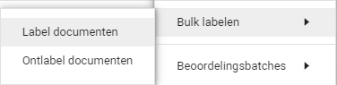

Het reduceren van de te onderzoeken data kan op verschillende manieren, maar in deze aanbevolen werkwijze wordt gefocust op dedupliceren en het vinden van embedded objects. Dedupliceren is bij Woo-verzoeken erg handig, omdat bij het doorzoeken van de data veel dubbele documenten voorkomen. Hiervan hoeft echter maar één versie geleverd te worden aan de verzoeker. Ook pakt de software embedded objects uit. Dit zijn bijvoorbeeld logo’s in gemeentelijke brieven of andere afbeeldingen in documenten. Deze zijn niet nodig voor de levering en vallen dus niet onder het verzoek.
Deze stappen volgen na het uploaden van documenten en vallen dus onder de post-upload activiteiten.
Door te dedupliceren kunt u dubbele bestanden detecteren op dossier- of beheerderniveau. Beoordelaars zullen hierdoor in staat zijn om slechts één versie van een document te reviewen en te produceren. De duplicaten blijven aanwezig in ZyLAB ONE, waardoor de beoordelaar kan zien of er meerdere beheerders zijn die een bestand bezitten en of er meerdere bronnen zijn waar een bestand aanwezig is. Deduplicatie moet handmatig worden gestart. Hiervoor gaan we van het dossier dashboard, via Configuratie, naar Deduplicatie.
 
Wanneer Deduplicatie geselecteerd is, komt het volgende in beeld:

Hier ziet u een optie voor ‘Matter Level Deduplication’ (Deduplicatie op dossierniveau) of ‘Custodian Level Deduplication’ (Deduplicatie op beheerdersniveau).
Wanneer ‘Matter Level Deduplication’ wordt geselecteerd, zal de software het hele dossier dedupliceren. Dat houdt in dat alle dubbele documenten worden aangegeven als duplicaat,
ongeacht of het van verschillende beheerders komt. Wanneer ‘Custodian Level Deduplication’ geselecteerd wordt zal de software de data dedupliceren, maar houdt het rekening met verschillende beheerders.
Dat houdt in dat de software per beheerder gaat kijken voor duplicaten en of elke beheerder (waar een duplicaat voorkomt) een eigen origineel heeft.
Om de deduplicatie te starten, wordt de gewenste deduplicatie geselecteerd en klikt u op ‘Begin’.
Wanneer ‘Begin’ geselecteerd wordt, komt de onderstaande informatie in beeld. Deze informatie toont wanneer de deduplicatie is gestart en dat de software bezig is met dedupliceren.
Wanneer de software klaar is met dedupliceren komt het volgende in beeld. Er staat dan dat de deduplicatie is voltooid, wanneer het is gestart en wanneer het voltooid is.

Wanneer de deduplicatie is voltooid, worden de documenten in de documentlijst verdeeld door middel van een Duplicate Type.
Hier zijn drie opties in:
Deze kolom kan in de documentlijst geselecteerd worden voor een handig overzicht.
Daarnaast kan ook de kolom ‘Duplicate Count’ geselecteerd worden om te zien hoeveel duplicaten er van dat document zijn. Hierbij betekent nul (0) dat er slechts één versie van het bestand is. Als het aantal duplicaten 1 is, zijn er twee versies (het origineel en het duplicaat). Wanneer het aantal duplicaten 2 is, zijn er drie versies (het origineel en twee duplicaten). Enz.

Om alle duplicaten in de documentlijst te zien kunt u filteren op duplicaten. Dit kan door bij ‘Velden’ te filteren op ‘Duplicate Type By Document’ en dan ‘Duplicate’ te selecteren.

De documentenlijst zal er dan als volgt uitzien, met alleen duplicaten.

Om duidelijk te tonen dat een beoordelaar een document heeft geopend dat een duplicaat is, kunt u alle duplicaten in een keer ‘Bulk labelen’ met het label ‘Duplicaat’. Dit doet u door het voorgaande filter te gebruiken en bij ‘Lijstopties’ de ‘Simpele lijst’ te selecteren.

Vervolgens klikt u bij ‘Bulk labelen’ op ‘Label documenten’.

Wanneer u op ‘Bulk labelen’ klikt, opent het volgende scherm. Hier selecteert u het label ‘Duplicaat’. Klik vervolgens op ‘Volgende’.

Wanneer ‘Volgende’ geselecteerd is, geeft de software een samenvatting van wat u wilt gaan doen. Het is belangrijk dat u zeker weet dat de zoekopdracht en label kloppen. Wanneer dit zeker is, kunt u klikken op ‘Begin’ en zullen alle duplicaten gelabeld worden met het label ‘Duplicaat’. Zo weet de beoordelaar dat ze dat document kunnen overslaan.

Embedded Objects zijn bijvoorbeeld logo’s of afbeeldingen die uit documenten zijn gehaald. Zie het voorbeeld hieronder, waar de afbeeldingen in het document 'Economic impact' per stuk zijn uitgepakt naar een apart document (object0001 t/m object0006).

Embedded Objects hoeven niet geleverd te worden aan de verzoeker en vallen dus niet onder het verzoek. Door middel van de volgende stappen kunt u deze documenten makkelijk labelen met het label ‘Valt niet onder verzoek’, zodat ze niet een voor een beoordeeld hoeven te worden.
Alle Embedded Objects in de matter kunnen gevonden worden door bij ‘Velden’ te filteren op ‘Is Embedded’. Vervolgens klikt u op het vakje om ‘Ja’ te selecteren.


Wanneer dit filter gebruikt wordt, zal de documentlijst er ongeveer zo uit komen te zien. Bij de kolom ‘Is Embedded’ kunt u zien dat overal ‘Ja’ staat, omdat het gaat om Embedded Objects.

Vervolgens kunt u net als bij dedupliceren de documenten Bulk labelen. Hiervoor moet weer eerst bij ‘Lijstopties’ op ‘Simpele lijst’ geklikt worden en vervolgens bij ‘Bulk labelen’ op ‘Label documenten’.
Wanneer ‘Label documenten’ wordt geselecteerd, komt het volgende scherm te voorschijn. Hier moet ‘Valt niet onder verzoek’ geselecteerd worden om dit label aan de documenten te hangen. Vervolgens klikt u op ‘Volgende’.

Net als bij de deduplicatie, komt er na ‘Volgende’ een scherm waar een samenvatting wordt gegeven van wat u wilt gaan doen. Hier is het weer belangrijk dat u de juiste zoekopdracht en label hebt gebruikt. Wanneer dit zeker is, kunt u op ‘Begin’ klikken en worden alle Embedded Objects gelabeld met het label ‘Valt niet onder verzoek’ en hoeven de beoordelaars hier niet meer naar te kijken.

Wanneer de deduplicatie en Embedded Objects stappen zijn voltooid, kunt u makkelijk zien welke documenten nog wel beoordeeld moeten worden. Dit kunt u zien door in de documentenlijst te filteren op ‘NIET Duplicaat’ en ‘NIET Valt niet onder verzoek’. Dit zorgt ervoor dat u op alle documenten zoekt, behalve de documenten met de labels ‘Duplicaat’ en ‘Valt niet onder verzoek’. Zo blijven alleen de documenten over die beoordeeld moeten worden.